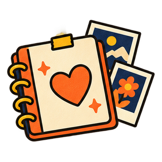
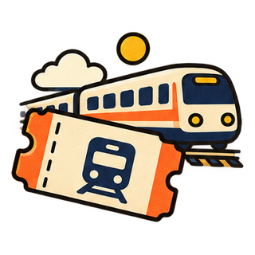
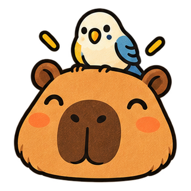
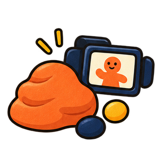
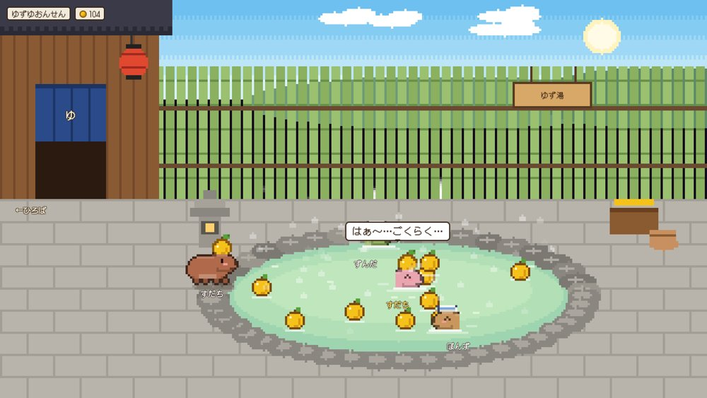
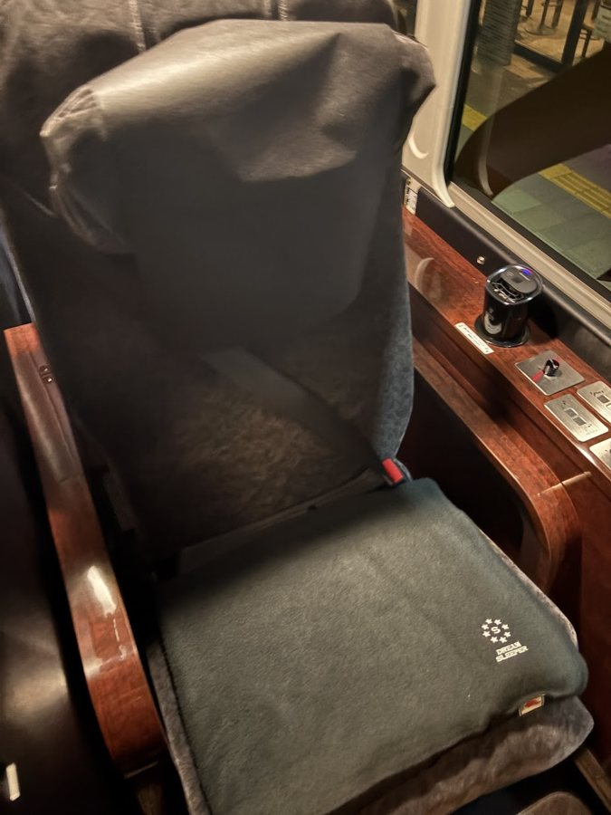
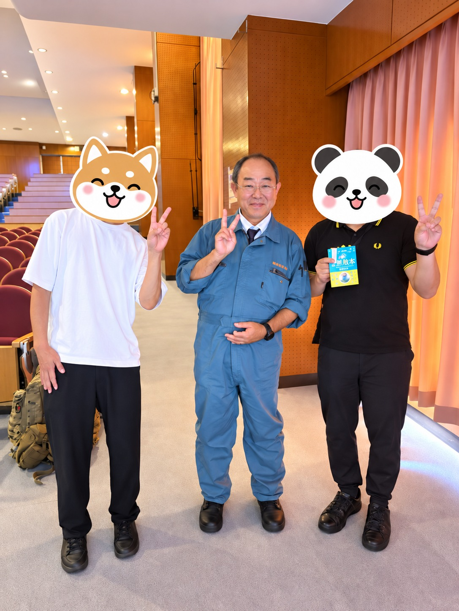

おけもんの
1ヶ月しおり8/20 → 9/24 36日間の遠足

なまえおけもん（と、AI社員たち）
きかん8月20日（木）〜 9月24日（木）
もくてきAIで、本気でふざける

CONTENTS
もくじ
 36日の日程表3
36日の日程表3
青春18きっぷの旅4- オフ会と、人5
- 妄想ムービー6

カピバラ集7
アップルのCMをTTP8- Astraでいろいろ9
 初めての体験10
初めての体験10- 福岡・植松努さん11
- スタンプラリーと来月12
持ちもの
- AI社員たち
技術・コーチング・発信・お金・タスクの担当が、毎日いっしょ - 「おもろそう」センサー
見たら作りたくなる。今日ひとつ作っちゃおう - 青春18きっぷ
5日間で1,183km - カピバラとインコ
だいたい、どの作品にも出てくる - やらかす勇気
失敗は、ぜんぶデータ - 毎日の日記
36日、1日も欠かさず
SCHEDULE
36日の日程表
| 週 | やったこと |
|---|---|
| 1週目 8/20〜 | 前回のAIシェア会／ときめきオフ会／AIタイムバケットオフ会／AIで妄想ムービーの試作をはじめる |
| 2週目 8/24〜 | AI経営チームの90日実験スタート／AI×HP勉強会／Claude Code活用術オフ会／読書会vol.6／「自分を経由しない」がうまれる |
| 3週目 8/31〜 | 長浜ぶらり／青春18きっぷ5日間（大久野島→餘部→和歌山→新宿）／新宿AIオフ会29人 |
| 4週目 9/7〜 | サウナで作戦会議／自分専用EDM30分／AI講演12本・891分／カピバラのダンス動画／神戸の酒蔵めぐり |
| 5週目 9/14〜 | ジャーナリングアプリ3本／おけ森の島ボード／MiniTown／アップルのCMをTTP／Jev導入／Substack開始 |
| 6週目 9/21〜 | NotebookLMで車座会／Astra最高出力デー／福岡で植松努さん／カピバラ島（Opus 5.5）／きょう、ここ |
01
青春18きっぷの旅
9/2〜9/6 5日間
大久野島のうさぎ → 日本海の餘部 → 和歌山城 → 新宿。「結局電車乗ってる間ほぼPC触ってたわ🤣」
もふもふ
「このために降りるとかなんて贅沢、いや楽しいぞこれ！」
02
オフ会と、人
主催12回・コーチング7人
9/6の新宿AI初心者オフ会は29人・7卓。前半と後半で同じ人が同じ卓にならない席割りを、AIがつくりました。
- 8/20 ときめきオフ会
カラー×ストレングス。当日アプリをその場で3回改修 - 9/1 ストレングス勉強会
事前登録36人。チャエン式スライドを初めて本番で - 9/6 新宿AIオフ会
29人・7卓の席割りをAIで - 9/13 神戸の酒蔵めぐり
9人で「大人の遠足みたいだった」 - 9/23 福岡の会
植松さんの講演のあと、福岡の仲間と - コーチング7人
その人専用の取扱説明書が、当日〜翌日に届く
「自分が動ける範囲でオフ会して、人に会ってる時の方がうまく回ってる」
03
妄想ムービー
AIの女の子と、行きたい場所へ
画像をつくって、動かして、音をつけて。いっしょに餃子を食べたり、未来の景色を見に行ったり。女の子はAIでつくった架空のキャラクターです。
「飲んだくれみたいになってるけど、
これはこれでちょっとおもろい」
04
カピバラ集
インコといっしょに、踊る・いたずら・跳ねる
05
アップルのCMをTTP
TTP＝徹底的にパクる
Mac miniのCMのクレイアニメ（粘土のコマ撮り）の空気を、ムキムキのカピバラで。
06
Astraでいろいろ
9/22 リセット前の最高出力デー ／ 9/24 Opus 5.5
「19時のリセットまでアストラをぶん回そう」。名刺、配達ゲーム、接客道場、紙飛行機……。そして今日は、カピバラの島まるごと。




07
初めての体験
夜行バス・グリーン車・ふしぎなセッション




3つ
シャーマンセッションで言われたのは「自分の価値を、低く見積もりすぎちゃう」。
08
福岡・植松努さん
9/23 人生初のグリーン車で
福岡大学の講演で「思うは招く」を生で。講演のあとに写真まで。学食でトンテキも食べました。


招く
「これで願ったことかなうわぁ。
まさに思うは招くやねー」
GOAL
スタンプラリー達成！
8つの章、ぜんぶ回りました
来月のしおり（予告）
- 9/27コラボオフ会（ストレングス×目標設定）
- 10/1TEDxKobeのお手伝い、打ち合わせ
- 10/18TEDxKobe 本番
- 審査中カピバラ×インコの動くLINEスタンプ
- 11月瞑想合宿（前回の宿題、ねらい中）
来月も、本気でふざけます。 ── AI社員一同より